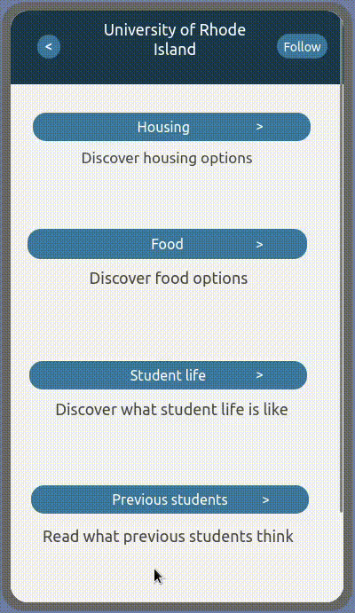
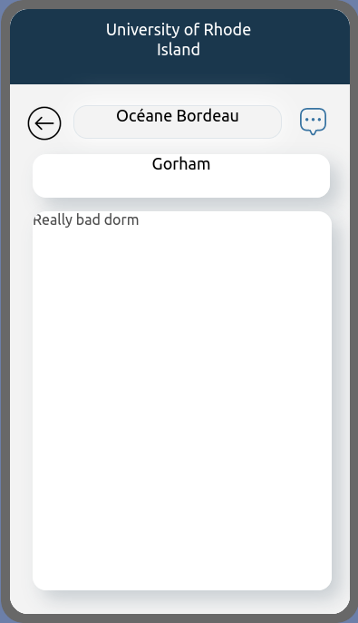
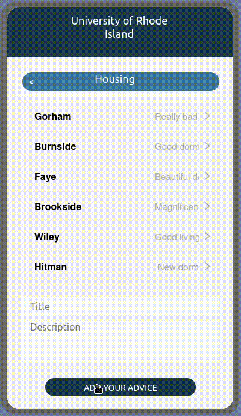

Study Abroad Guide
How to use Study Abroad Guide?
Sign Up
You can sign up by clicking on "Sign Up" at the bottom of the login screen. This will take you to the sign up screen where you can enter your information. To sign up click on the "Sign Up" button at the bottom of the screen. After, you will receive an email to confirm your account. You just have to click on the link in the email.
Sign In
You can sign in by clicking on "Sign In" at the bottom of the sign up screen. This will take you to the login screen where you can enter your information. To sign in click on the "Log In" button at the bottom of the screen.
Complete Your Profile
When you sign in for the first time, you will be asked to complete your profile. You can enter your information and then click on "Save" at the bottom of the screen
Look For A University
On the home screen, you can click on "Search for university" to look for a specific university. You can enter the name of the university and click on "Search" to look for it. You can also click on the different categories to look for a university in a specific category.

Follow Or Unfollow A University
On a specific university screen, you can click on "Follow" at the top of the screen to follow this university. You can click on "Unfollow" to unfollow this university.
Find Advices For A University
On a specific university screen, you can click on one of the different advice categories "Housing, Food, Student life, Previous students, Courses" to look for advices for this category.
See Advices For A University
When you have clicked on one of the different advice categories for a university you can see the advices for this category. You can click on one of the advices to see the details of this advice.
Add An Advice For A University
When you have clicked on one of the different advice categories for a university you can click add an advice by entering the Title and the Description of the advice. Then you can click on "Add Your Advice" to add this advice.
See Other Students Profile
On the bottom navigation bar, you can click on "Chat" to see the other students profile. On the chat screen, you can click on "Search user" to look for a specific user. You can enter the name of the user and click on "Search" to look for it.

Send A Message To A User
On a student profile screen, you can click on "Send a message" to create a chat with this user. You can also click on a user in your chat screen to send him a new message. You can enter your message in "Type here" and press "Enter" to send it.

See The Universities Followed
On the bottom navigation bar, you can click on "Profile" and then on "Followed Universities" to see the universities you have followed.

Change My Profile Information
On the bottom navigation bar, you can click on "Profile" and then on "Change my info" to change your profile information. You can change your information and then click on "Save" at the bottom
Log Out
On the bottom navigation bar, you can click on "Profile" and then on "Log Out" to log out of your account.